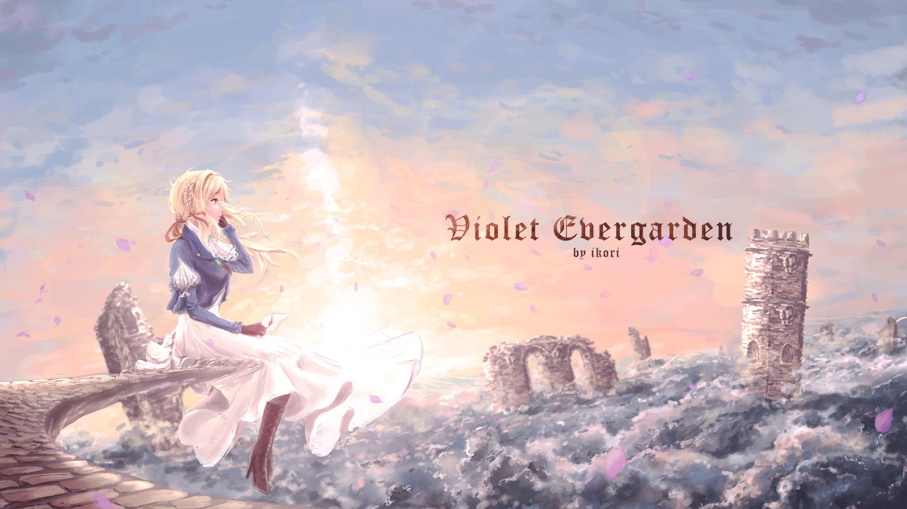
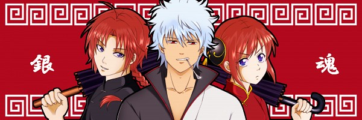

- 
Violet Evergarden
-
 My Hero Academia
My Hero Academia -
 Attack on Titan
Attack on Titan -
 The Seven Deadly Sins
The Seven Deadly Sins -
 Steins Gate
Steins Gate - 
Gintama
-
 Sword Art Online
Sword Art Online
Top Anime 2018
| |
|||
 |
Angel Beats! Year of manufacture: 2010 Genre: Adventure, Mystic, Comedy, Drama Episodes: 13 Directed by: Kishi Seiji Description: No wonder they say that the Japanese school system is the hardest and most severe. For the guy by the name of Otonashi (the name he forgot) woke up in the next world - and there again school! But, despite the beautiful wrapping, this school is more like a correctional colony for those who left the mortal world too early and did not have time (or did not want) to know the rules and laws of "real society". That is, the young person who has been brought up will twist in her, will learn to walk in order and participate in extracurricular activities according to the plan - and it's time to go to the stage according to the accumulated karma. But for some reason, not everybody likes this ... The most diverse students who decided not to disappear, but to figure out for what and from whom they received the “new term”, informally united, creating the “Front of the Underworld” under the command of the strong-willed and practical Yuri. Their goal is to get answers, their life is the rejection of the rules imposed, and the means to achieve the goal is the eternal struggle with the administration and the “mistress” of the school named Tensi (angel). Otonashi, the main character, involuntarily joined such a negative company. Now the guy is guaranteed a fun life, true friends and a subscription to the concerts of the best local group “Dead Girls and Miracle Yudo”. It's only the beginning! |
||
 |
One Punch Man Year of release: 2015 Genre: action, comedy, fantasy Episodes: 12 Directed by: Natsume Shingo Description: In the comic book universe, no one is surprised by monsters, villains, and mad scientists. They are like natural phenomena - unpleasant, of course, but what can you do? The main thing is to have enough heroes to protect ordinary people, and then - how lucky. And it is necessary for such a thing to happen that Saitama - the strongest of the heroes of Zet City - is not at all like a fighter for peace and justice: bald, short, expressionless face, clothes, even less able to stand in a pose and express themselves pathetically! The fact is that Saitama is not a secret stranger, a mutant or a billionaire, but only an unemployed person who once decided to become stronger and live with his mind. For three years, the atypical hero has grown so much that with one blow he sends out even Superman, even the Prince of Darkness. Truly, if you wish, anyone can become a Buddha - but Saitama just does not want to, this is a desire to live, play, accept recognition. And if so, you will have to work for the image - take, for example, as students of the young cyborg Genos, and join the local heroic Association - let them pay their salaries, but there’s no time to run all the time! |
||
 |
One Outs Year of release: 2008 Genre: Sport Episodes: 25 Directed by: Sato Yudzo Description: The story of Tokuchi Toa, a kind of pitcher who played the street game for money: One for Departure. He never lost ... He did not lose until he met Hiromichi Kojima, a professional batter who, having won, forced Tokuchi to play professional baseball. But even there, the evil genius of the Toa made an adventurous contract with a no less evil Owner. Contract "One for Departure" ... |
||
 |
Tokyo Ghoul Year of release: 2014 Genre: action, mysticism, drama, thriller, horrors, psychology Episodes: 12 Director: Morita Syuhei Description: The race of ghouls has existed since time immemorial. Its representatives are not at all against people, they even love them - mostly raw. Fans of human flesh are outwardly indistinguishable from us, strong, fast and tenacious - but they are few, because the ghouls have developed strict rules for hunting and camouflage, and violators are punished or quietly handed to fighters with evil spirits. In the age of science, people know about the ghouls, but as they say, they are used to. The authorities do not consider cannibals a threat, moreover, they are considered as an ideal basis for creating super-soldiers. Experiments have been going on for a long time ... None of this was known by Ken Kaneki, a timid and nondescript Tokyo freshman, hopelessly in love with the beautiful intellectual Rize, a frequent guest at the Meeting Place cafe, where the guy works as a waiter. I did not think Ken would soon have to become a ghoul himself, and many acquaintances would appear in an unexpected light. The main character will have a painful search for a new path, for he realized that people and ghouls are alike: they just eat each other in the literal sense, others in the figurative one. The truth of life is cruel, it cannot be redone, and the one who does not turn away is strong. And then somehow! |
||
 |
Sword Art Online Year of release: 2012 Genre: Adventure, Fantasy, Romance, Drama, Comedy Episodes: 25 Directed by: Ito Tomohiko Description: At the beginning of the XXI century, an expected sensation happened - a Japanese genius created a role-playing game with absolute virtual reality. It is not surprising that “The Art of the Sword Online” gained enormous popularity, and 10,000 lucky people who got the first edition, on the appointed day and hour, found themselves in the game world, having gathered in the City of Beginning. Then the crafty creator, who appeared in the form of a huge shadow, and stunned customers - it turns out, he conceived an experiment, and you can get out of the virtual only when someone passes the game to the end! Death in the game means death in the real world, it is necessary to work in all seriousness - with these words the evil genius retired, and the participants quickly realized that he was right. Unlucky players reacted differently: who fell into despair, who began to stray into groups, and someone decided to live on his own. In the number of the latter, Kirito was also an orphan who lost nothing. Moreover, being a beta tester and an experienced player, Kirito quickly advanced, gaining fame as the Black Swordsman. On the one hand, the guy avoided communication, not wanting to start and lose loved ones anymore; on the other hand, it’s impossible to live in a game and be free from people, especially from people like beautiful Asuna nicknamed Flash! In general, so far Kirito, Asuna, other heroes and villains are fighting on the front lines, and we believe that they will pass not only the “Art of the Sword”, but also many more interesting games and worlds! |
||
 |
Haikyuu !! Year of release: 2014 Genre: sport, school, comedy, daily Episodes: 25 Directed by: Mitsunaka Susumu Description: 12-year-old Shyo Hinata saw several matches on TV - and fell in love with volleyball. For three years, the guy worked on his dream - and in the last year of high school he was able to assemble a team and take it to a real tournament. And there, of course, newcomers recruited “from the pine forest” were beaten in the very first lap, and the terrible playmaker Tobio Kageyama, nicknamed King, gave them a terrible defeat, almost single-handedly. The redhead fan of the ball over the net did not give up and, eager for revenge, entered Karasuuno High School, that is, Crow Field, where he immediately went to a volleyball club. Guess who he met there? This is how sworn friends-rivals began to defend the black and yellow colors of the Ravens. Not without difficulties (no one loves the young and the early ones), but both still became full members of the club, although the game philosophy of the guys is different: Hinata believes in “overcoming” and team spirit, Kageyama - in strict control and personal skill. Perhaps due to their differences, the two young players formed an excellent acting duet, in which both the coach and the older comrades believed. Now, learning from each other and improving their skills, our heroes can lead the school to new victories. What do young volleyball players have there instead of Kosien? |
||
 |
Yowamushi Pedal Year of release: 2013 Genre: Comedy, Drama, Shonen, Sport Episodes: 38 Directed by: Osamu Nabeshima Description: Otaku Sakamichi Onoda just went to high school and plans to join the anime club. In high school, Onod had no friends with whom he could talk about anime, games, Akihabara, and other things that are dear to the heart of every otaku. He hoped that he could do this with new friends in the anime club, but he learned that he was disbanded. To restore the club, he is trying to find four other students. Because of his weight, Onoda rides a mamacharia, an awkward bicycle, which he uses mainly for short trips to pick up food or go to Akihabara, where Onoda happens every week. The cyclist Sjunske Imaizumi during his workout notices Onoda, who was riding up the steep road. A freshman and cyclist-racer, Shokuti Naruko, met Onoda in Akihabara when he bought models of Gundam for his younger brothers. Attention both attracted mamacharia Onoda. Later it turns out that they all go to the same school. Naruko and Imaizumi are trying to convince Onoda to join the cycling club, but will he agree? |
||
 |
Zetsuen no Tempest The
Civilization Blaster Year of release: 2012 Genre: adventure, mysticism, drama, fantasy, action, psychology Episodes: 24 Directed by: Ando Masahiro Description: High school student Mahiro Fuwa lost his family - unknown persons brutally murdered his father, mother and sister Ike. As time went on, the authorities could not even find the keys to a clue, in the end the hot guy vowed to personally take revenge on the murderers and disappeared. A year later, Yoshino Takigawa came to worship the grave of the Fuwe family - and he was embroiled in a battle between an old friend and some cool beauty. Mahiro flew through the air and reflected the bullets - now he found unexpected help in his search and invited Yoshino to join. Takigawa did not refuse, because he loved Hayk, although in public the guys hid their relationships in every possible way. The partners have no secrets, and Mahiro said that he had signed a contract with Hakaze Kusaribe - the strongest magician of the current generation! Here are just Hakaze, the keeper of the Tree Beginnings, was betrayed by his assistants and imprisoned on a desert island. The power was captured by its kin Samon, who wants to revive the Tree of the Forbidden Garden, it is also the Tree of Knowledge, which gives absolute power. The head of the Kusaribe clan, cut off from magic, put the last spark of the gift into two wooden dolls - and one of them, ironically, was found on the far bank of a Japanese guy who agreed with the sorceress that they would help each other. It’s time to help - the world is shaken by disasters, people are dying, the very bond of time is falling apart. However, who among the wizards is right - time will tell, and Mahiro could safely say after the classic: Fiat justitia, et pereat mundus - “let the world collapse, but justice will triumph!” |
||
 |
Entrance on the horizon Year of manufacture: 05.10.2013 - 03.03.2014 Genre: Adventure, Comedy, Fantasy, Romance, Shonen Episodes: 25 Directed by: Shinji Ishihira Description: Thirty thousand players from Japan and much more from around the world were suddenly locked up in the multiplayer online role-playing game Legend of the Ancients. On the one hand, gamers were transported to the new world physically, the illusion of reality turned out to be almost flawless. On the other hand, the “hitches” retained their previous avatars and the acquired skills, the user interface and the pumping system, and even the death in the game led only to the resurrection in the cathedral of the nearest large city. Realizing that there is no great goal, and no one called the price for the exit, the players began to stray together - alone, to live and rule according to the law of the jungle, others - to resist lawlessness. Shiroe and Naotsugu, in the world a student and a clerk, in the game - a cunning magician and a mighty warrior, have long known each other from the legendary guild "Mad Tea Party". Alas, those times are gone forever, but in the new reality one can meet old acquaintances and just good guys with whom it will not be boring. And most importantly - in the world of "Legends" appeared the indigenous population, who considered the newcomers to be great and immortal heroes. Inevitably, you want to become a sort of knight of the Round Table, beating dragons and saving girls. Well, there are plenty of girls around, monsters and rogues too, and for rest there are cities like the hospitable Akiba. The main thing - to die in the game is still not worth it, it is much more correct to live humanly! |
||
 |
Ajin Year of production: from 01/16/2016 Genre: Adventure, Horror Episodes: 13 Directed by: Susita Hiroyuki Description: The story of an immortal man, who was discovered 17 years ago in Africa at a combat range. From that moment on, such life forms became known as half humans. Once, right before the beginning of the summer, a young man, on his way home, is hit by a car and “kills” on the spot. After a couple of moments, he comes to life, but a large amount has already been declared for his head. |